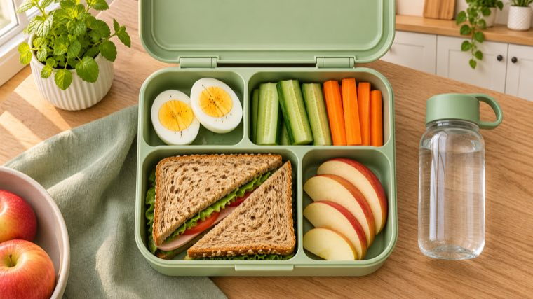
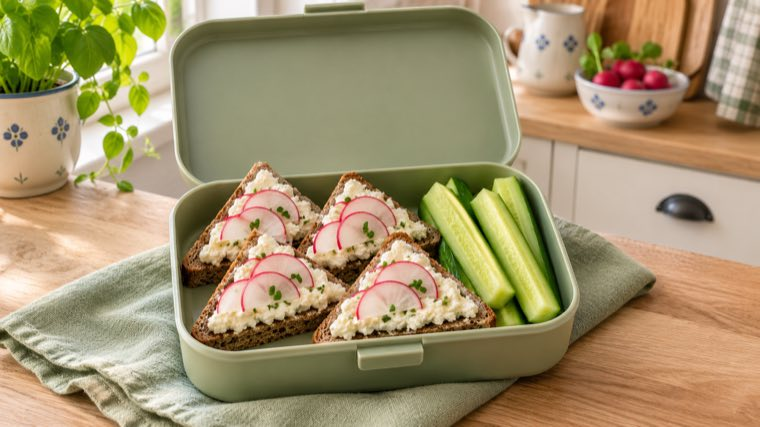
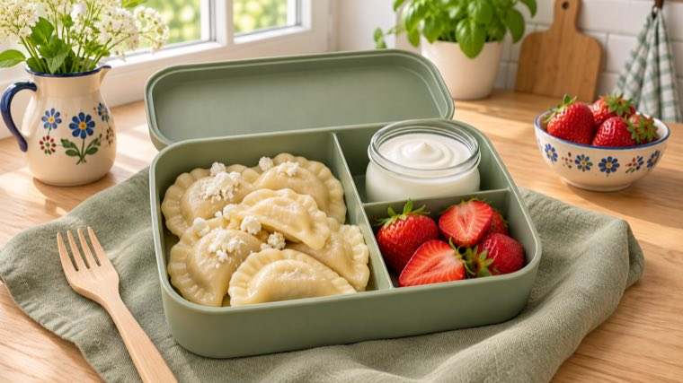
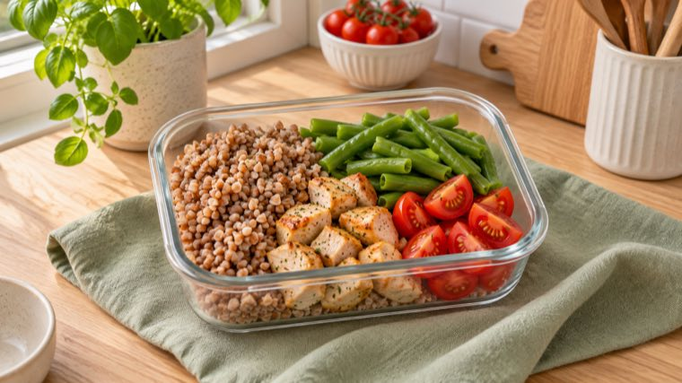
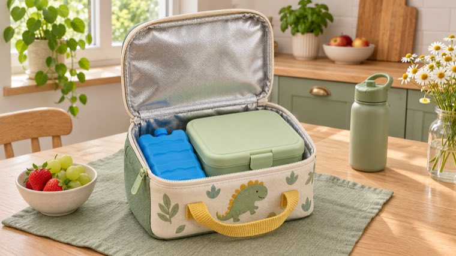
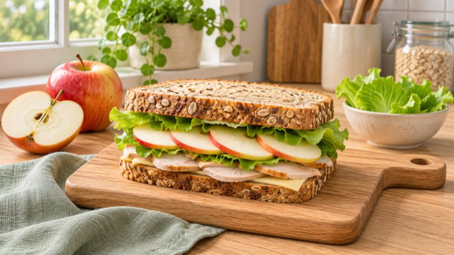
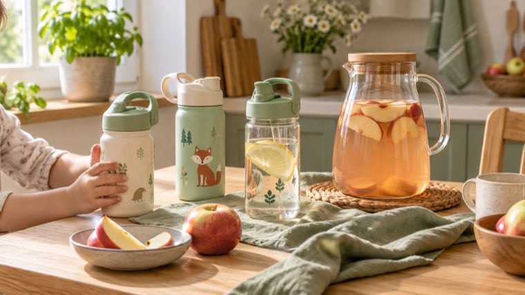

Poranki potrafią być szybkie. Dlatego w Wesołych Śniadaniówkach lubimy rozwiązania, które da się powtórzyć bez długiego planowania i bez kupowania połowy sklepu.
Ten poradnik pomoże Ci ułożyć pudełko z prostych produktów, które znasz z domowej kuchni. Znajdziesz tu gotowe zestawy, wskazówki dotyczące pakowania i sposoby na to, żeby jedzenie dotarło do dziecka w apetycznej formie.
Nie musisz robić wszystkiego naraz. Wybierz jeden pomysł, dopasuj go do dziecka i sprawdź, jak sprawdzi się w Waszym dniu.

Pomyśl o pudełku jak o kilku małych elementach. Nie chodzi o idealny układ ani o odhaczanie każdego okienka w foremce. Chodzi o praktyczny punkt wyjścia, dzięki któremu łatwiej podjąć decyzję rano.
Jeden produkt może pasować do więcej niż jednej części schematu. Pierogi z twarogiem czy naleśnik z farszem nie potrzebują osobnych przegródek na każdy składnik. Dołóż do nich warzywo, owoc i napój, a potem zobacz, czy taka porcja pasuje do Waszego planu dnia.
Możesz korzystać z resztek domowego obiadu, jeśli były właściwie przechowywane i nadają się do zjedzenia na zimno. Dzięki temu nie musisz gotować specjalnego dania o poranku. Zawsze zaplanuj też sposób utrzymania właściwej temperatury posiłku.
Każdy zestaw to propozycja do zmiany, nie sztywny przepis. Jeśli pudełko ma mniej przegródek, użyj małych szczelnych pojemników albo silikonowych foremek do rozdzielenia suchych dodatków. Potrawy wymagające chłodzenia spakuj zgodnie ze wskazówkami w dalszej części poradnika.
W każdym przykładzie napój zapakuj osobno, w szczelnym bidonie. Wielkość porcji i sposób pokrojenia dostosuj do wieku, umiejętności i apetytu dziecka.

Jeśli dziecko nie lubi połączonych smaków, włóż twarożek do osobnego pojemniczka, a rzodkiewkę podaj obok. Pieczywo można wtedy posmarować tuż przed jedzeniem, o ile dziecku będzie wygodnie to zrobić.

Pierogi przygotowane na obiad odłóż do przechowania przed podaniem reszty dania na stół. Do pudełka zapakuj je schłodzone. Jeśli nie macie możliwości utrzymania ich w chłodzie, wybierz inny zestaw.
Twaróg możesz rozgnieść widelcem i zostawić łagodny w smaku. Jeśli naleśnik jest duży, zacznij od części porcji, a pozostałą część zachowaj w lodówce do wykorzystania w domu.

Ułóż kaszę i mięso obok siebie, jeśli dziecko nie lubi mieszanych potraw. Dołóż mały widelec i sprawdź, czy pudełko da się wygodnie otworzyć podczas przerwy.
Placki pakuj osobno od serka, żeby dziecko mogło samo zdecydować, czy chce je połączyć. Jeśli nie lubi placków na zimno, wybierz zestaw, który chętniej zje w takiej formie.
Jajko możesz też zapakować osobno, a bułkę zostawić bez dodatków. Taki układ sprawdzi się, jeśli dziecko woli jeść składniki po kolei albo nie przepada za wilgotnym pieczywem.
Do tego zestawu przyda się widelec lub łyżka. Pulpeciki możesz ułożyć oddzielnie od ryżu, a sos zostawić na domowy obiad, jeśli dziecko woli suche składniki w pudełku.
Wybierz kształt makaronu, który łatwo nabiera się widelcem. Jeśli dziecko woli wytrawną wersję, dodaj odrobinę posiekanego szczypiorku. Najpierw upewnij się, że ten dodatek jest przez nie lubiany.
To prosty układ inspirowany domową sałatką jarzynową, ale bez konieczności mieszania składników. Jeśli dziecko lubi sos, odrobinę jogurtu możesz podać osobno w szczelnym pojemniczku.
Jeśli korzystasz z fasoli z puszki, odsącz ją i opłucz przed przygotowaniem pasty. Pastę przygotowaną w domu przechowuj w lodówce i w drodze utrzymuj w chłodzie. Możesz posmarować chleb cienką warstwą albo spakować pastę osobno.
Najładniejsze pudełko nie zawsze jest najwygodniejsze. Poproś dziecko, żeby przed zakupem lub pierwszym użyciem samo spróbowało otworzyć i zamknąć zatrzaski. Sprawdźcie też, czy zmieści pojemnik do plecaka i czy wygodnie będzie z niego jeść.
Przegródki pomagają rozdzielić składniki, ale nie każda przegroda jest szczelna. Jeśli planujesz jogurt, sos albo soczyste owoce, włóż je do osobnego szczelnego pojemniczka. Przetestuj zamknięcie w domu, obracając napełniony pojemnik nad zlewem.
Nie musisz od razu kupować całego zestawu akcesoriów. Na początek wystarczy pudełko, które już macie, szczelny bidon i mały pojemnik na wilgotny dodatek. Później łatwiej ocenisz, czy przydadzą się kolejne elementy.

Torba termiczna pomaga ograniczyć ogrzewanie się zawartości, ale sama nie jest lodówką. Przy jedzeniu wymagającym chłodzenia potrzebne są odpowiednie wkłady chłodzące oraz sprawdzenie, czy zestaw rzeczywiście utrzymuje potrzebną temperaturę do czasu posiłku.
Zamroź wkłady zgodnie z instrukcją producenta. Zapakuj schłodzone jedzenie do torby razem z wkładami, najlepiej umieszczając je po różnych stronach pojemnika. Trzymaj torbę z dala od słońca i kaloryfera.
Możesz sprawdzić swój zestaw termometrem do żywności podczas próby w warunkach podobnych do tych, w których dziecko będzie nosić posiłek. Sprawdź temperaturę produktu w przewidywanej porze jedzenia. Sam fakt, że wkład jest jeszcze chłodny w dotyku, nie potwierdza temperatury jedzenia.
Jeśli nie możesz zapewnić odpowiedniego chłodzenia przez cały potrzebny czas, wybierz produkty, które zgodnie z etykietą nie wymagają lodówki przed otwarciem, oraz całe owoce i warzywa. Nie zakładaj, że torba utrzyma bezpieczną temperaturę przez dowolnie długi dzień.
Czas poza lodówką zależy od produktu, temperatury i sposobu pakowania. Najpierw sprawdź etykietę: producent może podawać warunki przechowywania oraz inne zasady po otwarciu opakowania. Wskazówki na opakowaniu dotyczące chłodzenia należy zachować także po zapakowaniu posiłku.
| Co pakujesz | Jak zaplanować przechowywanie |
|---|---|
| Twarożek, jogurt, ser, jajko na twardo, wędlina i pieczone mięso | Wymagają chłodzenia. Bez utrzymania chłodu nie zostawiaj ich w temperaturze pokojowej dłużej niż 2 godziny; gdy temperatura otoczenia przekracza 30°C, maksymalnie 1 godzinę. |
| Ugotowany ryż, makaron, kasza, ziemniaki, pierogi i domowe placki | Po przygotowaniu schłódź i przechowuj w lodówce, a na drogę zapakuj z chłodzeniem. Bez utrzymania chłodu obowiązuje ten sam limit: do 2 godzin, a powyżej 30°C do 1 godziny. |
| Umyte, pokrojone owoce i warzywa | Zapakuj do czystego pojemnika i trzymaj w chłodzie. Nie zakładaj, że po pokrojeniu mogą bez ograniczeń leżeć w ciepłym plecaku. |
| Całe, niepokrojone jabłko lub mandarynka | Możesz zapakować je bez krojenia. Umyj owoc przed jedzeniem lub przygotowaniem, także wtedy, gdy będzie obierany. |
| Pieczywo i zamknięte produkty trwałe | Sprawdź etykietę i warunki po otwarciu. Suche pieczywo samo w sobie nie wymaga chłodzenia, ale dodany twarożek, jajko lub mięso zmienia sposób przechowywania całej kanapki. |
Podane limity dotyczą łącznego czasu, w którym łatwo psujący się produkt pozostaje bez odpowiedniego chłodzenia, również podczas przygotowania i transportu. Nie są obietnicą, że jedzenie będzie bezpieczne przez cały dzień w torbie. Jeśli nie wiesz, jak długo posiłek był w cieple, nie oceniaj bezpieczeństwa po zapachu czy wyglądzie; wyrzuć go.
Nie wysyłaj potraw, które powinny być przechowywane w lodówce, jeśli nie możesz zapewnić im odpowiedniej temperatury do posiłku. Dotyczy to również kanapki z nabiałem lub mięsem, nawet jeśli samo pieczywo może leżeć poza lodówką.
Nie pakuj surowego ani niedogotowanego mięsa, surowych ryb ani potraw z surowym jajkiem. Oddzielaj produkty surowe od gotowych do jedzenia i korzystaj z czystych przyborów. Przed przygotowaniem posiłku umyj ręce, a owoce i warzywa umyj pod bieżącą wodą.
Dopasuj jedzenie do umiejętności dziecka, zwłaszcza u najmłodszych. Produkty o okrągłym kształcie, takie jak winogrona i pomidorki koktajlowe, pokrój wzdłuż na ćwiartki; całe orzechy i twarde kawałki jedzenia mogą grozić zadławieniem. Podczas jedzenia dziecko powinno siedzieć spokojnie i być pod opieką odpowiednią do wieku.
Sprawdź też zasady obowiązujące w przedszkolu lub szkole, szczególnie dotyczące alergii i produktów przynoszonych do grupy. Jeżeli dziecko ma alergię, wybieraj składniki zgodnie z jego indywidualnymi zaleceniami i czytaj etykiety.

Mokra kanapka często przegrywa z apetytem jeszcze przed pierwszym kęsem. Osusz umytą sałatę i warzywa przed pakowaniem. Pomidora, ogórka albo sos możesz umieścić osobno i pozwolić dziecku dodać je przy jedzeniu, jeśli ma na to czas i ochotę.
Jeśli kanapka ma być gotowa od razu, ułóż suchy liść sałaty pomiędzy pieczywem a wilgotnym dodatkiem. Nie jest to szczelna bariera, ale może pomóc zachować przyjemniejszą strukturę chleba. Wypróbuj rozwiązanie na Waszym ulubionym pieczywie.
Pokrojone jabłko ciemnieje po kontakcie z powietrzem. Możesz złożyć pokrojone cząstki z powrotem w kształt owocu i umieścić je w zamykanym pojemniku. Innym sposobem jest skropienie kawałków odrobiną soku z cytryny, jeśli dziecku odpowiada ten smak.
Pokrojone owoce zapakuj w czysty pojemnik i utrzymuj w chłodzie. Jeśli dziecko potrafi samodzielnie zjeść całe jabłko, najprostszą opcją może być zapakowanie go w całości i umycie przed jedzeniem.
Apetyt dwulatka i dwunastolatka może wyglądać zupełnie inaczej. Znaczenie ma też długość dnia, pora poprzedniego posiłku, czas przerwy i to, czy dziecko może spokojnie otworzyć pojemnik. Zamiast kierować się pojemnością pudełka, zacznij od porcji podobnej do tej, którą dziecko zwykle zjada o podobnej porze.
Jeśli jedzenie często wraca, zapytaj bez oceniania: „Co było najłatwiej zjeść?”, „Czy zdążyłaś albo zdążyłeś otworzyć pudełko?” lub „Wolisz kanapkę w kawałkach czy w całości?”. Odpowiedź może dotyczyć czasu, temperatury, zapachu albo tego, że składniki się wymieszały.
Spróbuj jednego małego dostosowania: mniejszej kanapki, osobnego sosu albo łatwiejszego zamknięcia. Jeżeli dziecko regularnie wraca głodne, zwiększ porcję lub dodaj kolejny znany składnik. Pozwól mu współdecydować, co trafia do pudełka.
Nie wykorzystuj pustego pudełka jako jedynej miary udanego dnia. Czasem dziecko ma po prostu ochotę na coś innego, a czasem przerwa mija szybciej, niż się spodziewało. Informacja o tym, co wróciło, pomoże Ci zaplanować kolejny poranek.
Niespodzianka nie musi oznaczać dodatkowego zakupu ani skomplikowanej dekoracji. Wystarczy drobny szczegół, który dziecko zauważy podczas przerwy. Wybieraj pomysły odpowiednie do wieku i takie, które nie utrudnią jedzenia.
Nie musisz przygotowywać niespodzianki codziennie. Jednego dnia może nią być wybrany przez dziecko owoc, a innego zwyczajna kanapka podana w inny sposób.

Woda jest prostym wyborem na co dzień. Wlej ją do czystego, szczelnego bidonu, który dziecko potrafi samo otworzyć i zamknąć. Po powrocie opróżnij go, umyj zgodnie z instrukcją i zostaw do wyschnięcia.
Możesz też przygotować domowy kompot bez dodawania cukru, na przykład z jabłek i gruszek. Po ugotowaniu schłódź go, przechowuj w lodówce i zapakuj z chłodzeniem. Wybierz bidon odpowiedni do takiego napoju i sprawdź szczelność przed włożeniem go do plecaka.
Jeśli dziecko nie lubi kompotu, nie musisz go przekonywać. Woda i posiłek, który zna i lubi, to wygodny zestaw na wiele dni. Ilość napoju dopasuj do długości pobytu poza domem i możliwości uzupełnienia bidonu.
Wieczorem możesz zaplanować składniki, umyć pojemniki, zamrozić wkłady chłodzące i sprawdzić, czy bidon jest czysty. Potrawy przygotowane wcześniej przechowuj w lodówce zgodnie z zasadami bezpieczeństwa, a rano zapakuj je schłodzone z wkładami.
Rano złóż kanapkę, dodaj przygotowane składniki i sprawdź, czy wszystkie zamknięcia dobrze trzymają. Włóż karteczkę, jeśli masz ochotę. Pudełko nie musi wyglądać jak z katalogu: ma pasować do Waszego dnia i być wygodne dla dziecka.